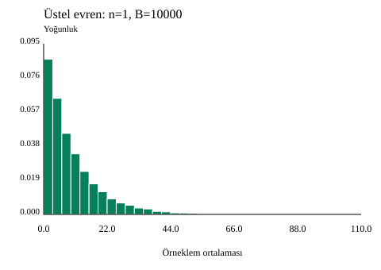
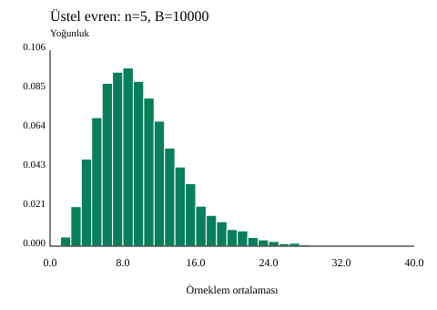
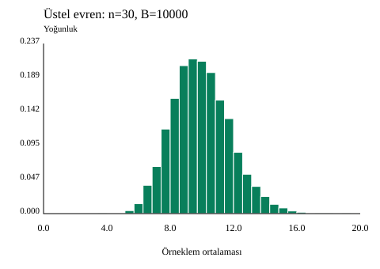

B05 — Merkezi limit teoremi ve standart hata
Üstel evrenin ortalaması ve standart sapması 10; tohum 2026; 10.000 tekrar. Aynı satırdaki n=1,5,30 ortalamaları ayrı, bağımsız örneklemlere aittir.
E(ortalama)=10; Var(ortalama)=100/n; SE=10/√n. Tekrar ortalamalarının örneklem standart sapması ampirik SE’dir. n büyüdükçe ortalamalar daralır; ham evren değişmez. n=30 her evren için normallik garantisi değildir; bağımsızlık ve sonlu varyans önemlidir.



Öğretim panellerinin yatay ve düşey ölçekleri farklıdır. Yalnız şekil genişliklerini değil, eksenleri ve SE değerlerini karşılaştırın.
| Değişken | Tekrar | Ortalama | Örneklem SS |
|---|---|---|---|
| ort1 | 10000 | 9.850940111 | 10.006517687 |
| ort5 | 10000 | 9.976486031 | 4.481203621 |
| ort30 | 10000 | 9.964918484 | 1.826794594 |
n=25 için SE=2; n=100 için SE=1. SE’yi yarıya indirmek örneklem hacmini dört katına çıkarmayı gerektirir. Tekrar sayısını artırmak ise benzetim oynaklığını azaltır; n sabitken hedef SE değişmez.
İndir ve kontrol et
Tam ayıklayın; b05/ornek-01 klasöründe py cozum.py --check çalıştırın. Beklenen: 24 kontrol değeri eşleşiyor.
Rehber · Çözüm ve 24 değer · Alıştırmalar · Yanıtlar · Özgün doğrulama kaydı